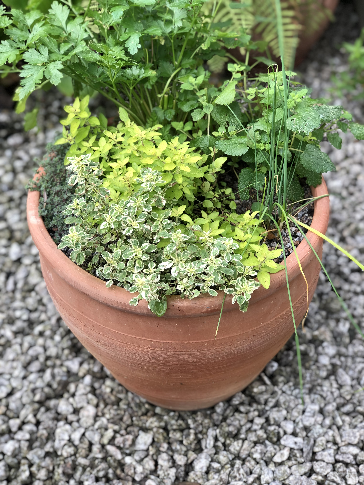

How to plant a herb garden in a container
Growing your own herbs gives you great freshness, flavour and choice. Having your own herbs near the back door is a wonderful way to start growing (and eating) your own produce, estabishing a connection between kitchen and garden.
Herbs are very forgiving plants to grow and a herb garden can be beautiful as well as useful, providing a lovely sensory experience.
Terracotta pots suit Mediterranean herbs such as rosemary, thyme, and sage since terracotta is porous and these herbs prefer very well drained (and rather poor) soil.
First place some broken terracotta pieces (crocks) covering the hole at the bottom of the pot. This will prevent compost from falling out, and improve drainage.

Next fill the pot with a peat free compost mixed (roughly) 50:50 with horticultural grit or sharpsand. If water does not flow almost immediately through the pot then the drainage is not good enough - with mediterranean herbs good drainage is essential!
Herbs from different regions may prefer different conditions. Basil for example, would need a really rich, moisture-retentive mix instead.

Now you can get planting!

Fill in any gaps with more compost and top dress with a layer of grit.

Fast forward 8 weeks - and et voila!

It's always good to leave lots of space around each herb when planting - they will fill out quickly.
These herbs will need to be kept in a sunny spot (preferably near the kitchen!) and watered regularly. A patio or courtyard is ideal.
The herbs in my pot are:
- Marjoram (Origanum vulgare 'Aureum')
- Oregano (Origanum vulgare 'Country Cream')
- Parsley (Petroselinum crispum 'French')
- Wild Thyme (Thymus woolly)
- Lemon balm (Melissa officinalis)
- Chives (Allium schoenoprasum)